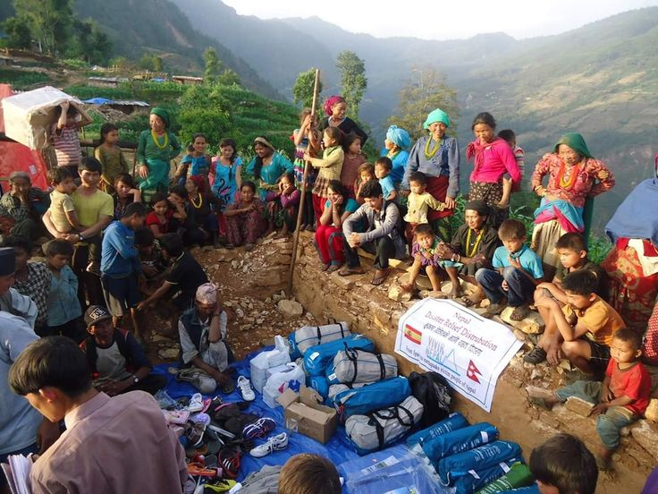

Prepare and Plan Ahead
Prepare the care centre and make sure staff know the emergency plan and which residents may need extra support.

Earthquake preparedness practice
Know the Emergency Plan
Know the safe areas, emergency procedures, evacuation routes, and meeting points.
Know Who Needs Extra Help
Be aware of residents who may have difficulty moving, hearing, seeing, or communicating.
Check Emergency Supplies
Make sure important emergency supplies are available and easy for staff to access.
Keep Exits Clear
Make sure corridors, doors, stairs, and emergency exits are not blocked.